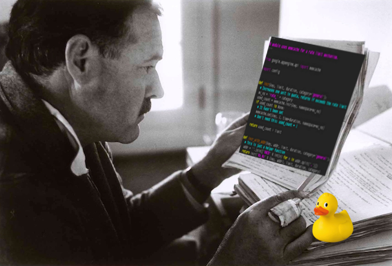

How Would Hemingway Write Code?
LinkedIn | Github | Blog | Subscribe

How many times have you looked back on code you wrote a few months back and thought, “what the hell was that?” I regularly scratch my head at code I wrote a few days prior, especially if I rationalized my spaghetti code away as a “scratch file.”
There is objectively good code and bad code, in the same way there is good writing and bad writing. Writing good code isn’t all that different from writing good prose. Both good code and writing need to follow certain rules and best practices, as well as artfully solve many problems that lie outside the scope of rigid covenant.
Great code is concise, glaring in its intent, and brief - following the DRY principle. There was no other writer who followed these coding practices to their natural conclusion in literature better than Ernest Hemingway. Hemingway wrote seven novels in the first half of the 20th century and won the Nobel Prize for Literature in 1954. He was the master of the simple sentence and the restrained narrative, developing this style as a young reporter.
My thought experiment: how would Hemingway write code if he were a data scientist or a web developer? What can we learn from the techniques that crafted some of the best American literature? Let’s find out.
He would study the greats
Samuelson: But reading all the good writers must discourage you. Hemingway: Then you ought to be discouraged.
In the open-source world, we have free access to some of the best code ever written. All we have to do is open GitHub and browse the source code of our favorite projects.
If Hemingway wrote R code like I do, he would have read all the Tidyverse “books” written by the phenomenal R scientist Hadley Wickham. These are the classics in the R community; many R developers regularly consult these repos when writing code for inspiration or ideas on how to solve a problem.
Since ancient times, most forms of art have had some kind of master-apprentice program. Rembrandt didn’t attend an online art school and immediately brush out The Nightwatch. He studied under a master to observe and absorb everything he could.
Today, the apprenticeship process is not so clearly defined but continues to exist in other forms. In 1934, an aspiring young Minnesotan named Samuelson hitchhiked to Hemingway’s casa in Key West to boldly knock on his door, putting his lot in Fate’s hands. Hem not only invited him over the next day, but he hired him to watch his boat for the next year, with a great deal of mentoring along the way.
At one point Samuelson asked what he should read to become a great writer. Hem produced a long list of books which he pressed on Samuelson to devour.
Samuelson: Should a writer have read all of those? Hemingway: All of those and plenty more. Otherwise he doesn’t know what he has to beat.
He would code from experience
One of the reason’s Hem’s books are classics is because he wrote from his own experience. His time as an ambulance driver in Italy during the Great War fueled his masterpiece A Farewell To Arms. His love of the outdoors dripped onto the pages of The Old Man and the Sea. He didn’t doodle from imagination but from vivid memories and tactile experiences that the reader finds absolutely authentic.
But how does a developer code from experience? Two words: business knowledge. If you’re designing an app to optimize freight deliveries for example, ride with a delivery driver for a week to gain a different perspective that your rubber duckie could never provide. Go out and learn the How and Why of what is desired, from the people who will actually use the thing.
Hemingway: Whatever success I have had has been through writing what I know about.
He would code longhand
Hem wrote much of his 50,000+ word novels longhand, with pen and paper. Even though he could have written faster with a typewriter, he still crafted most of his first drafts the ancient way: applying carbon to pressed pulp.
Modern science now tells us that writing longhand engages our brain more, helps us to be more creative, and increases comprehension - all benefits lacking from computer composition.
While the idea of writing code longhand may abhor you, especially if you lean a bit too heavily on your IDE’s intellisense, you’ll realize that you will Think before writing when the effort to write is greater, instead of thinking after typing.
I usually map out the salient chunks of my code on paper before even thinking of firing up my computer. I outline all the functions, map out which modules go where, etc., on whatever paper is handy. At that point, I’ll open my laptop and start carefully revising my ideas until I have something solid - a good first draft of the code. Next, I’ll work through one to three revisions, making changes and asking for feedback from peers. When I follow this practice, I definitely do NOT have the “WFT is this” feeling when reviewing it in the future.
He would stop strategically
In the age of the full stack and 10x developer, we could take a cue from Hem on resting. In one letter he outlines his thoughts on what we now call the work-home balance:
Hemingway: It is better to produce half as much, get plenty of exercise and not go crazy then to speed up so that your head is hardly normal.
Hem would begin a new adventure after finishing a manuscript or go fishing in the Gulf of Mexico when he had writer’s block. He knew the importance of getting his head out of the game at regular intervals.
Developers take pride in the odd hours they keep or the late-night work sessions that empty their internal reservoirs. Hem knew that he only had at best a handful of productive hours in any one day, so he didn’t attempt to force work after the golden hours had waned.
Do you ever stop reading a book on a cliffhanger? Just for the excitement, so when you sit down to read again you’re already jacked to see what happens? Hem did the same thing when he was writing his books. His protégé Samuelson asked him when he should knock off writing for the day, to which he responded:
Hemingway: The best way is always to stop when you are going good and when you know what will happen next. If you do that every day when you are writing a novel you will never be stuck…don’t think about it or worry about it until you start to write the next day, That way your subconscious will work on it all the time.
How often do you carry your work home with you? intentional or not? Junior web developer Hemingway would discourage this behavior because he learned that if he left his work at work, the next morning his subconscious would have the answer he was looking for all ready for him.
Hemingway: The first draft of anything is shit.
How much of your code gets past the first draft? Maybe it’s missing a few comments, or large chunks are carelessly commented out. If you were a craftsman, creating furniture that will be around long enough for your grandchildren to use, would you skip the hand sanding, leaving rough corners and blemishes?
While it may be entertaining to imagine Hemingway resolving a merge conflict, we can learn much about the development process in general from the man.
For further reading I suggest Hemingway’s For Whom the Bell Tolls as a good entry point, and Ernest Hemingway on Writing for more on his process.
Want more content like this? Subscribe here